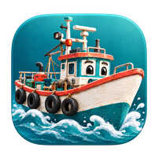
 03:10
03:10들어오는 배알림물어보기
75분 뒤 도착04:25
남진호
붉은대게 가능성 높음추정 79%
자망선 5t · 위판장까지 11.7km · 예측(신뢰도 높음)
생선 알림 받기들어오면 바로 알려 드려요›
📞 전화로 묻기
070-5276-7121로 걸면 AI가 바로 받아요

03:10남진호
붉은대게 가능성 높음추정 79%
자망선 5t · 위판장까지 11.7km · 예측(신뢰도 높음)
2026 디지털 트윈 구룡포 AI 해커톤 · 팀 인터뷰브릿지
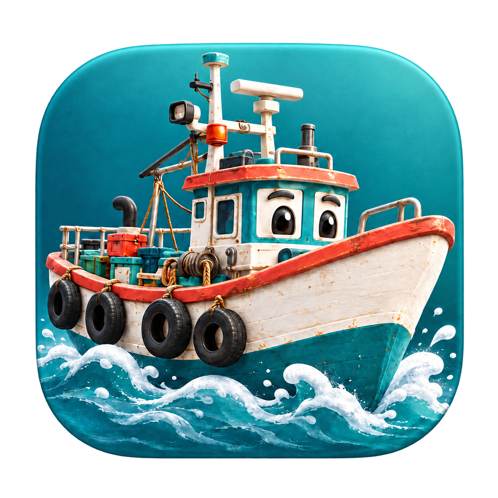
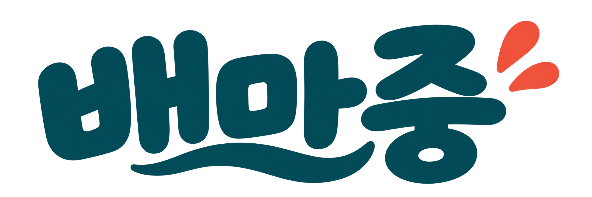
오늘 뭐가 몇 시에 들어오는지,
위판장 나가기 전에 알려 드립니다
지금 바로 bmj.kr 에서 확인해보세요.
소개 영상 · 주요 장면 (발표에서는 영상이 화면 전체로 재생됩니다)
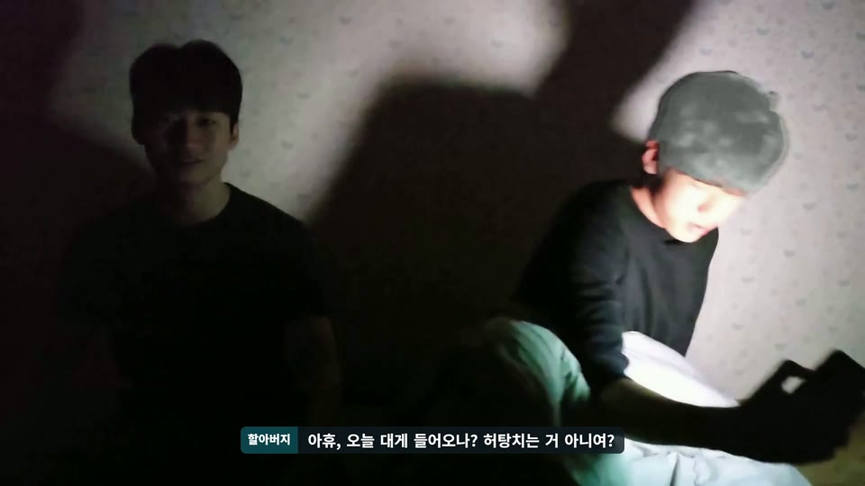
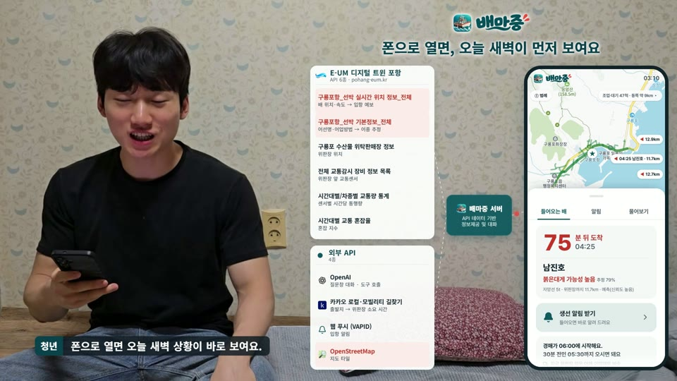
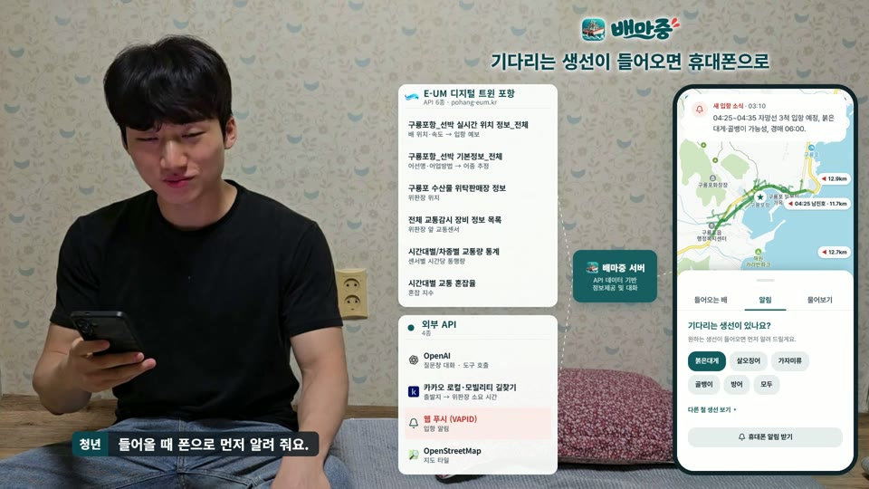
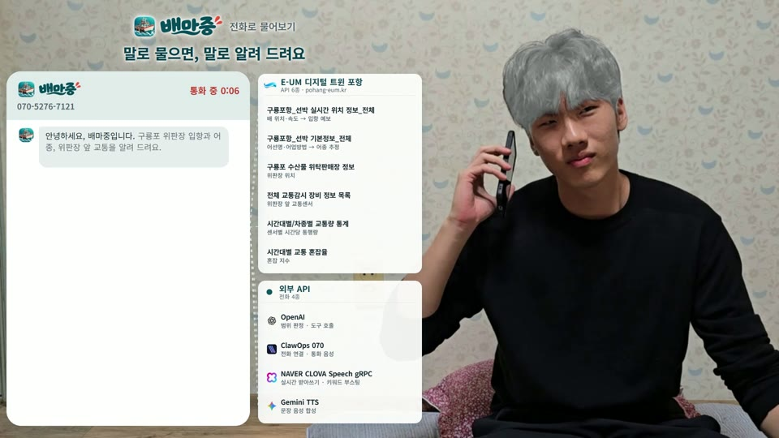
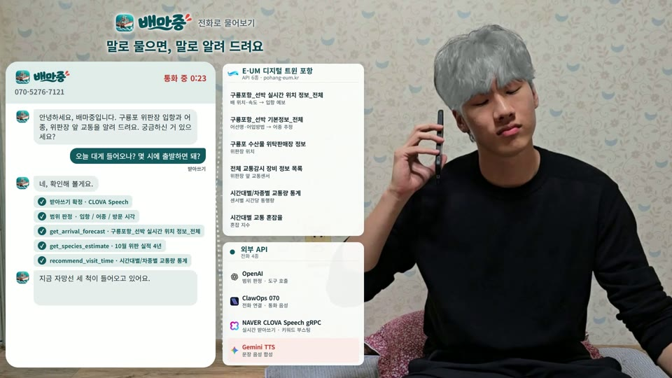
현장에서
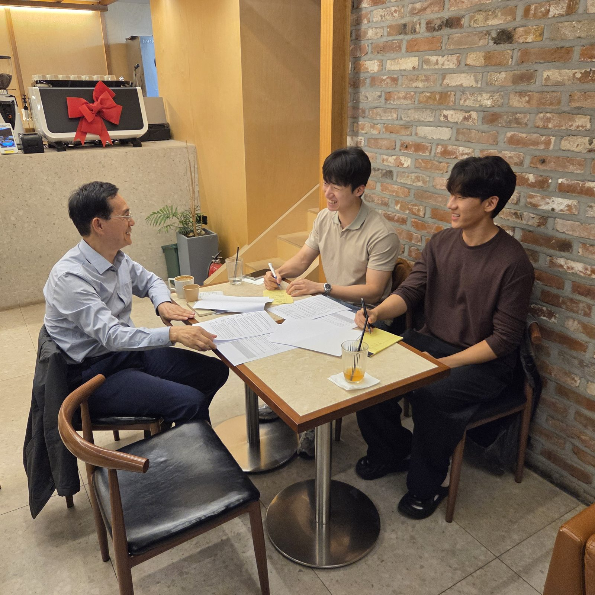
서울 영등포구 카페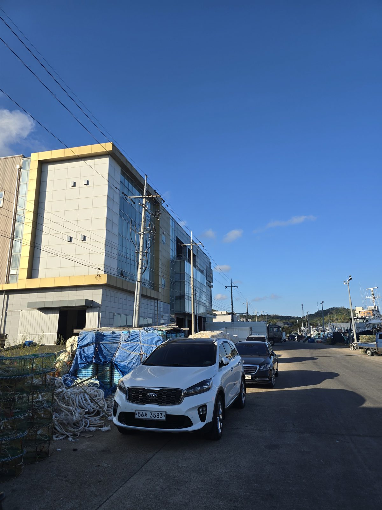
포항구룡포과메기사업협동조합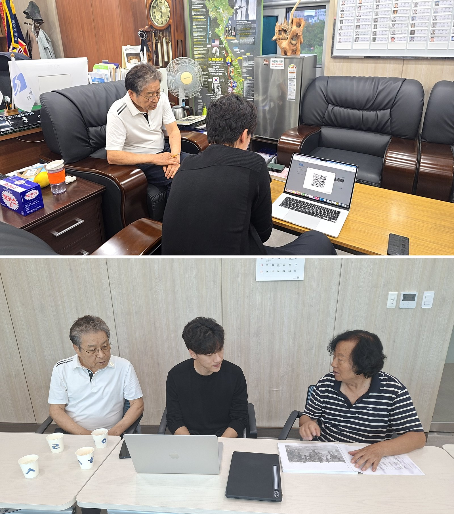
포항 통합보훈회관새벽 구룡포 위판장 취재 영상 · 주요 장면 (발표에서는 영상이 화면 전체로 재생됩니다)
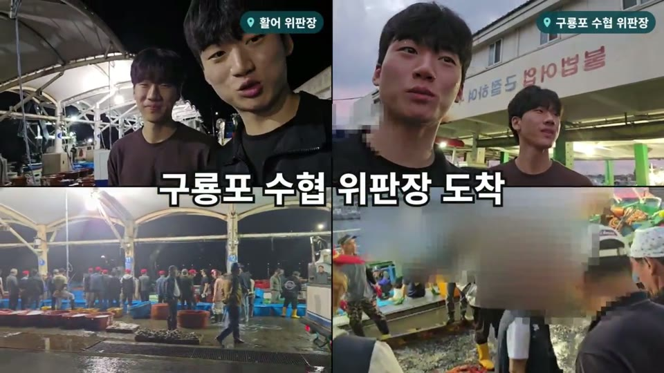
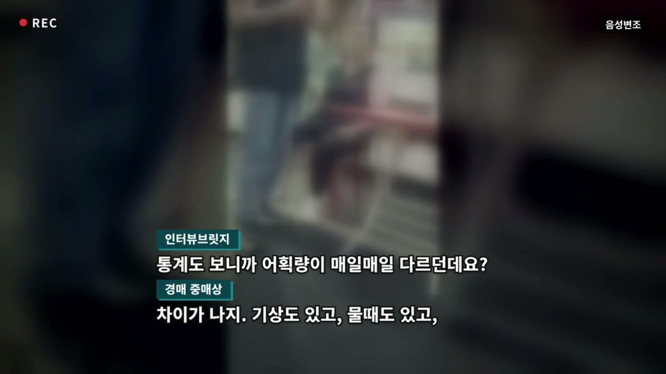
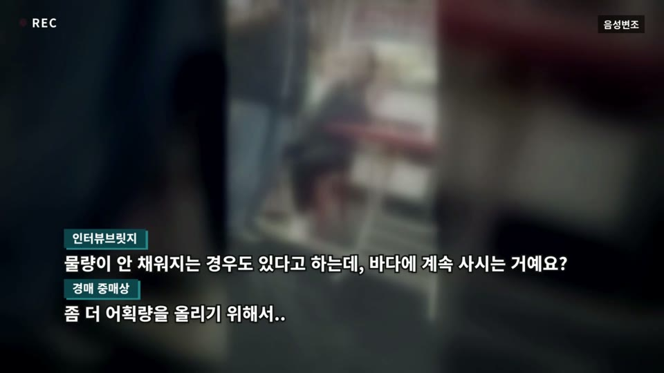
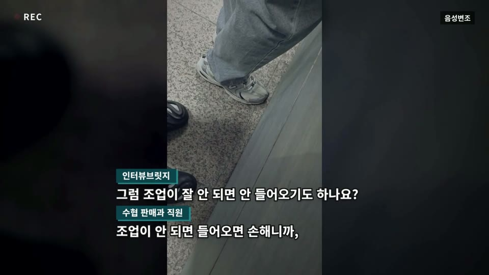
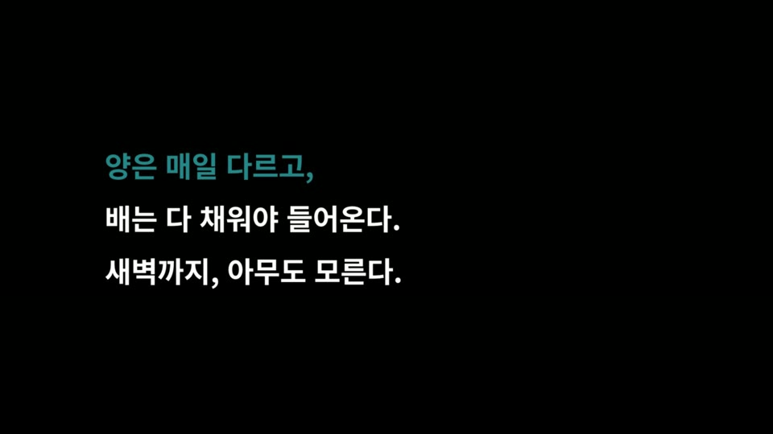
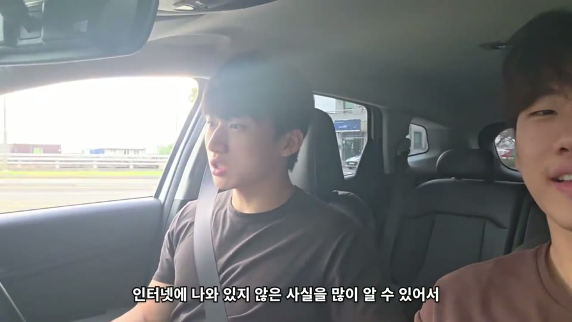
새벽 5시, 구룡포 위판장으로 가는 길
ex) 3년만에 10월 살오징어 어획량 1,473톤 → 44톤
ex) 청어 256톤 들어오고 15일 동안 0톤.
그 경매에 어떤 배가 무엇을 싣고 돌아오는지는 위판장에 가서 배를 봐야 압니다.
어가 인구 48.2%가 고령.
AI 서비스를 써 본 농어민은 31.1%(일반국민 59.4%).
1어떤 수산물이 얼마나 잡힐지 모른다
8월 위판금액 1위 어종 (구룡포 위판장)
10월 살오징어 위판량
1,473톤
→ 44톤 3년 만에
2026년 6월 청어 위판량 (같은 위판장, 경매일별, 톤)
방어도 같습니다(2025년 12월 84.6톤 → 닷새 뒤 0톤). 사는 쪽은 그날 배를 봐야 압니다.
배마중은 이렇게 — 입항 예보 + 어종 추정 + 먼저 알림
기대효과
2경매시간이 되어서야 안다
새벽 3시부터 경매까지, 지금 아는 것
경매 시각은 압니다. 모르는 건 그 전에 어떤 배가 무엇을 싣고 돌아오느냐입니다. 지금은 위판장에 가서 배를 봐야 압니다.
배마중은 이렇게 — 돌아온다는 걸 가장 먼저
기대효과
3앱과 웹이 낯설다
어가 인구 중 고령 인구
48.2%
AI 서비스를 써 본 비율
글자 안 쳐도 됩니다. 전화로 물으면 됩니다.
배마중은 이렇게 — 물어보기 + 070 전화
기대효과
기대효과
1입항 예보
돌아오는 배를 누구보다 먼저 압니다배 위치를 10분마다 읽어 위판장으로 향하는 배를 잡고, 도착 시각 = 남은 거리 ÷ 속도로 냅니다. 3시 10분에 "4시 25분부터 3척"을 압니다.
2먼저 알림
원하는 생선이 오는 날만 일어납니다골라 둔 생선을 실었을 배가 입항 중이 되는 순간 폰이 먼저 울립니다. 앱 설치 없이, 번호를 등록하면 같은 순간 070 전화로도.
3어종 추정
무엇을 실었을지 가능성으로 압니다10월에 자망선이 들어오면 붉은대게 78%. 업종 × 같은 달 4년 실적으로 내고, 맞히지 못하는 업종(근해자망)은 어종을 말하지 않습니다.
4나갈지, 몇 시에
경매 전에 나갈지를 정합니다6시 경매에 맞춰 5시 반 도착, 출발은 내 위치에서 거꾸로. 위판장 앞길은 센서 4곳의 지난 1시간 트럭 수로 지금 상태를 칠합니다.
5물어보기
글로 물으면 표의 숫자를 그대로 옮깁니다AI가 도구 7개(입항 예보 · 어종 · 교통 · 출발 시각 …)에서 찾은 숫자만 씁니다. 조회 기록이 답 아래 남고, 엉뚱한 질문은 정해진 한마디로 거절합니다.
6전화
앱도 글자도 없이 전화 한 통이면 됩니다알림을 전화로 받고 궁금한 건 말로 묻습니다. 화면과 같은 엔진, 같은 숫자. 구룡포 지명·어촌 말·그날 배 이름을 알아듣습니다(실통화 배 이름 5/5).
숫자는 누가 내나
남은 거리 ÷ 속도. AI는 계산에 손대지 않습니다.
어종업종 × 같은 달 4년 실적. 1위가 바뀌는 업종은 말하지 않습니다.
출발 시각카카오 길찾기 소요 시간에서 거꾸로. 60km 밖은 계산하지 않습니다.
가격예측은 접었습니다. 4년 중 3년이 3분의 1만 맞았습니다. 과거 실적만 답합니다.
질문 범위엉뚱한 질문은 바로 거절. 앞 대화를 꾸며 넣어도 안 넘어갑니다.
구조
1 받기
E-UM 어선·위판장·교통
해수부 위판 실적 · 카카오 길찾기
2 모으기
10분마다 배 위치
교통은 부를 때마다
3 계산
도착 시각 · 어종 가능성
도착 권장 · 출발 시각
4 문장
알림 문장 다듬기
질문 답하기(도구 7개)
5 보내기
지도 화면 · 웹 푸시
070 전화
서버
Python · FastAPI · SQLite · VM 1대(bmj.kr)
화면
React · 카카오맵 · 웹 푸시(PWA) · 안드로이드 APK(TWA)
말
OpenAI · CLOVA 받아쓰기 · Gemini 음성 · ClawOps 070
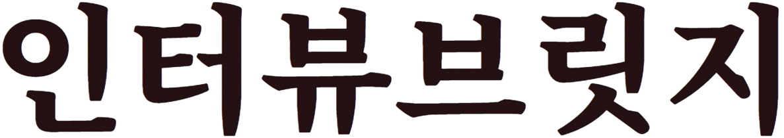
팀 인터뷰브릿지 · 포항공과대학교 컴퓨터공학과
말 끝과 침묵, 맞장구, 끼어들기를 실시간으로 판단해 발화권을 조정합니다. 배마중 070 전화가 이 엔진 위에 있습니다.
평가기준을 항목으로 나누고, 입력에서 근거를 찾아 충족·미흡·상충을 판정합니다. 숫자는 규칙이, 문장은 AI가 쓰는 배마중의 원칙과 같습니다.
대학·전형·학과별 평가기준과 학생 서류를 반영한 실시간 음성 모의면접. 65개 대학 16,501행 전형 데이터, 면접 유형 11종.
국내 한 사립고등학교와 제휴, 학교 단위 제공
어르신이 태블릿 앞에서 AI 경청자와 대화하면 1인칭 회고록과 육성 오디오로 엮습니다. 느린 발화와 긴 침묵을 기다리고, 방언·지명을 보정합니다.
RISE 리빙랩 프로젝트 · 어르신 20명 본 실증
한 교실에서 여러 조가 동시에 토론할 때 각 조의 흐름을 따라가며 필요한 순간에 음성으로 개입합니다. 2026년 11월 수업에 첫 적용.
국내 고등교육기관 교수-학습 모델 개발 사업 · AI 도구 공급
과거 방송 발화와 공개 심의 사례를 대조해 사람이 확인할 구간을 미리 좁히는 12주 공동 실증. 판정을 대신하지 않고 확인 범위만 줄입니다.
현대홈쇼핑 · 2026 용인 오픈이노베이션 교류회
셀러가 대화로 제품과 판매 계획을 설명하면 HS 코드 후보 · 외국어 품명 · 인보이스 초안을 담당자가 확인만 하면 되게 미리 준비하는 12주 공동 실증.
한진 · SURF 2026 인천 스타트업위크 OI 밋업